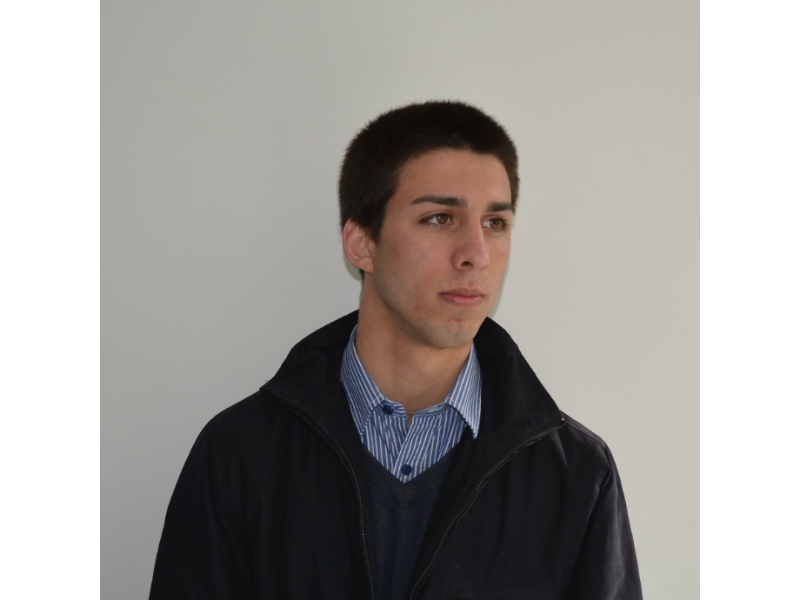
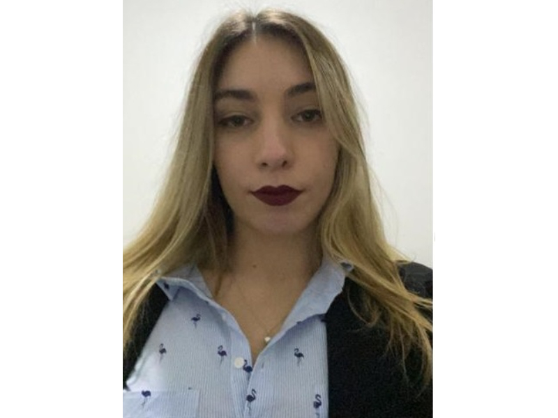

Damián Etcheverrigaray
"Lic. en Técnologias de la Información"
Sucede que cada vez que pierdo un perro, se lleva un pedazo de mi corazón con él. Y cada perro que entra en mi vida me regala un trozo del suyo. Si logro vivir lo suficiente, todas partes de mi corazón, serán de perro y llegare a ser tan bueno y generoso como ellos lo son.

María Belen Sanchez
"Doctora en Derecho"
Si no puedes amar a un perro como un miembro de tu familia, entonces no tengas uno. Porque ellos saben mirarte, como a un miembro de su manada, y para ellos, eso es la familia.